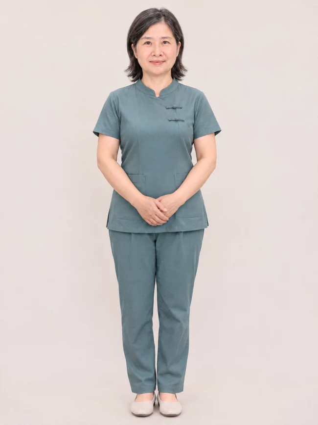

OUR STORY
江瑞玲について
手のぬくもりで心を伝え、日常にくつろぎのひとときを。

A STORY OF CARE
両手に込める、ひとつの思い
ブランドストーリー案・本人確認待ち
仕事や家族、日々の責任に多くの時間を費やす生活。忙しさが当たり前になると、自分のための時間は少なくなりがちです。江瑞玲経絡リラクゼーションのブランドストーリーは、そんな日常から始まります。リラクゼーションをたまのぜいたくではなく、意識して取り入れられる日々の習慣に。
江瑞玲を中心とするこのブランドでは、按（押す）、揉（もむ）、推（手を滑らせる）、撥（細やかな局所の動き）の四つの手技を通して経絡リラクゼーションを紹介します。それぞれ接触の仕方やリズムが異なり、安定した動きから穏やかな動き、連続した動きから細やかな動きまで、東洋の手技の美しさを表現します。
ブランドが伝えたいのは、不思議な効果ではなく、一人ひとりの感じ方への尊重です。予約前に希望する内容を相談し、接触方法や力加減の好みも遠慮なくお伝えください。心を込めた対応は、最初のご連絡から始まります。
手技に専念・心を込めたサービス
日々の養生・くつろぎの時間
雲林と嘉義で、江瑞玲経絡リラクゼーションは個人ブランドとして日常のリラクゼーションサービスの相談窓口を目指しています。忙しい方もまず手技を知り、自分に合った利用方法を考えることができます。
四つの手技を知るOUR VALUES
ブランドが大切にする三つのこと
一人ひとりの感覚を尊重
接触の好みは人それぞれ。無理をせず、まず相談しましょう。
丁寧で適度な手技
手技のリズム、触れられる感覚、心地よさを大切にします。
明確なサービスの範囲
非医療の民俗調理サービスです。疾病の診断・治療や効果の保証は行いません。
MAKE TIME FOR YOURSELF
自分のために、くつろぎの時間を
雲林を中心に、嘉義からのご相談も歓迎します。実際のサービス内容、時間、料金、場所は双方で事前に確認します。
予約・お問い合わせ 0912-202-025